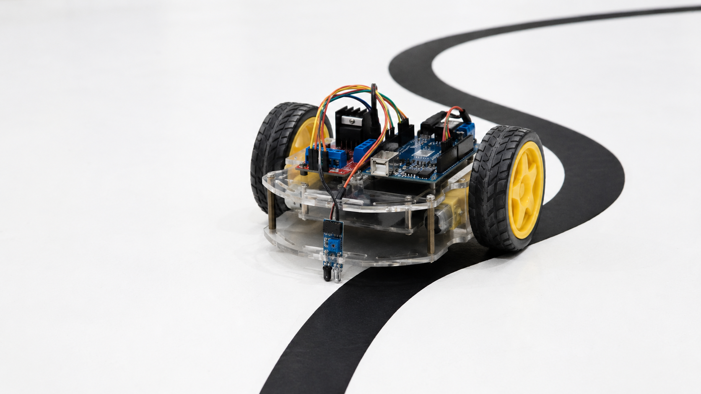

רובוט עוקב קו עם חיישן אחד
האם רובוט יכול לעקוב אחרי קו בעזרת חיישן אחד בלבד? כן. במקום לחפש את מרכז הקו, הרובוט שומר את החיישן בדיוק על הגבול שבין השחור ללבן ומתקן את כיוון הנסיעה ללא הפסקה.

החיישן שומר על הגבול בין שחור ללבן
למה דווקא חיישן אחד?
זהו אתגר תכנותי מעניין: החיישן אינו יודע אם הרכב סטה ימינה או שמאלה. לכן הרובוט עוקב אחרי שפת הקו בתנועות תיקון קטנות ורצופות.
שחור? מתקנים לצד אחד.
לבן? מתקנים לצד השני.
על הגבול? ממשיכים קדימה באופן יציב.
1 · קוראיםהחיישן מודד את עוצמת האור המוחזר מהרצפה.
2 · משוויםהקוד משווה את הקריאה לערך שבין שחור ללבן.
3 · מתקניםמהירות המנועים משתנה והרובוט חוזר אל שפת הקו.
עקרון הפעולה
- חיישן IR יחיד: מותקן בחזית הרכב, מעט לצד הקו וקרוב לרצפה
- כשהחיישן רואה לבן: הרכב פונה בעדינות לכיוון הקו
- כשהחיישן רואה שחור: הרכב פונה בעדינות לכיוון השני
- שני מנועים + גשר H: מבצעים את התיקון בפועל
קוד לדוגמה
const int lineSensor = A0;
const int threshold = 100; // להתאים לאחר בדיקת החיישן
const int leftMotorF = 7, leftMotorB = 6;
const int rightMotorF = 4, rightMotorB = 5;
void setup() {
pinMode(leftMotorF, OUTPUT);
pinMode(leftMotorB, OUTPUT);
pinMode(rightMotorF, OUTPUT);
pinMode(rightMotorB, OUTPUT);
}
void loop() {
int sensorValue = analogRead(lineSensor);
if (sensorValue < threshold) {
turnLeft(); // החיישן רואה שחור
} else {
turnRight(); // החיישן רואה לבן
}
}
טיפים לכיוונון
לפני הנסיעה מציגים ב־Serial Monitor את ערכי החיישן מעל הלבן ומעל השחור, ובוחרים ערך סף ביניהם. מתחילים במהירות נמוכה ומכוונים את מיקום החיישן עד שהרכב נע בצורה יציבה לאורך שפת הקו.
גרסה נוספת: עוקב קו עם שני חיישנים לעמוד הפנימי עם הסבר וקוד לגרסת ימין–שמאל